《CSS 权威指南（第四版）》读书笔记（第 7-13 章）
“旧书清理”系列。这里是 7-11 章的内容，主要介绍了：视觉格式基础、内边距、边框、轮廓、外边距、颜色、背景、渐变、浮动及其形状、定位、弹性盒布局，以及栅格布局。
第 7 章 - 视觉格式基础
- Page 268盒模型（个人觉得叫“屋模型”更贴切）：

- box-sizing：可用于改变元素 width 和 height 值的具体意义。可选值如下：
- content-box：默认值。width 和 height 的值仅为内容区的宽高；
- border-box：width 和 height 的值将包含 border 和 padding 的宽度。
- 若元素的 margin-left、margin-right 被设为固定值，且其值加上元素宽度小于父容器容纳块的宽度，则 margin-right 会自动隐式变为 auto（宽度填满父容器）；
- 7 个横向属性（margin-left、border-left、padding-left、width、margin-right、border-right、padding-right）之和需要等于总宽度，纵向属性同理。其中，外边距可以为负值；
- 当块级置换元素的 width 设为 auto 时，其实际值等同于自身宽度；
- 相邻的、没有边框（border）阻隔的纵向外边距会发生折叠（包括相邻的同级元素，或者父子元素）。负外边距在折叠时，绝对值最大的会胜出。所有失败元素的外边距会被重置为 0。
- Page 287列表项目：
- list-style-position：设定列表记号的位置。可选值如下：
- inside：将记号作为行间内容；
- outside：将记号放在内容区开头（padding 部分）。
- list-style-type：设定列表记号的类型。
- Page 288行内元素：
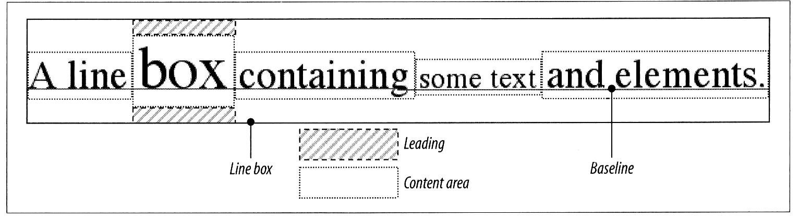
- 基本概念：
- 匿名文本：不在任何行内元素中的字符串；
- 字体框（字符框）：由 font-size 控制其高度。多数字体的字体框高度与字形高度是不一致的；
- 内容区：可以是各字符的字体框连在一起构成的方框，也可以是元素中各字符的字形合在一起构成的方框；
- 行距：line-height 与 font-size 之差。仅非置换元素有行距。
- 行内框：“内容区 + 行距”得到的方框。非置换元素为 line-height 的值，置换元素为内容区高度；
- 行框：过一行中各行框最高点和最低点的方框。
- 非置换行内元素的内边距、边框和外边距对行内框的高度没有影响（文字正常排列），而置换元素则相反；
- 默认情况下，置换元素其底边与一行的基线对齐；
- line-height 属性主要影响所在元素下的行内（inline）内容，块级元素中的各文本行本身就是行内元素。
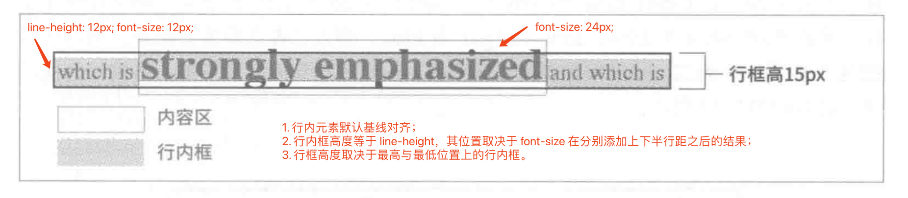
- 再看 vertical-align：
- baseline：默认值，元素的基线与父元素基线对齐。HTML 规范并未规定置换元素的基线位置，因此它们的行为视浏览器实现而定；
- top（bottom）：元素行内框的顶边（底边）与所在行框的顶边（底边）对齐；
- text-top（text-bottom）：元素行内框的顶边（底边）与父元素内容区的顶边（底边）对齐；
- middle：元素行内框的纵向中点与父元素基线以上 0.5ex 处的点对齐；
- super（sub）：向上（向下）移动元素的内容区和行内框；
- <percentage>：向上或下移动元素，移动的距离等于声明的百分数乘以元素的 line-height 值。
- 内边距、外边距，及边框不影响行内元素行框的总高度；边框的边界由 font-size 控制；外边距仅会被添加到行内非置换元素的左右两端，行内置换元素则会添加到四周；
- box-decoration-break：改变断行行为。可选值如下：
- slice：默认值。行内非置换元素多行显示时，用户代理将其视为“断成多块”的一长行；
- clone：将“断成多块”的各个片段视为单独的框，具有独立的背景、内边距、边框。
- 行内置换元素的行内框包含整个元素，即内容、外边距、边框和内边距；
- 行内置换元素没有基线，默认情况下，其行内框底边（外边距边界）与整行的基线对齐。
- Page 309行内块级元素（inline-block）：
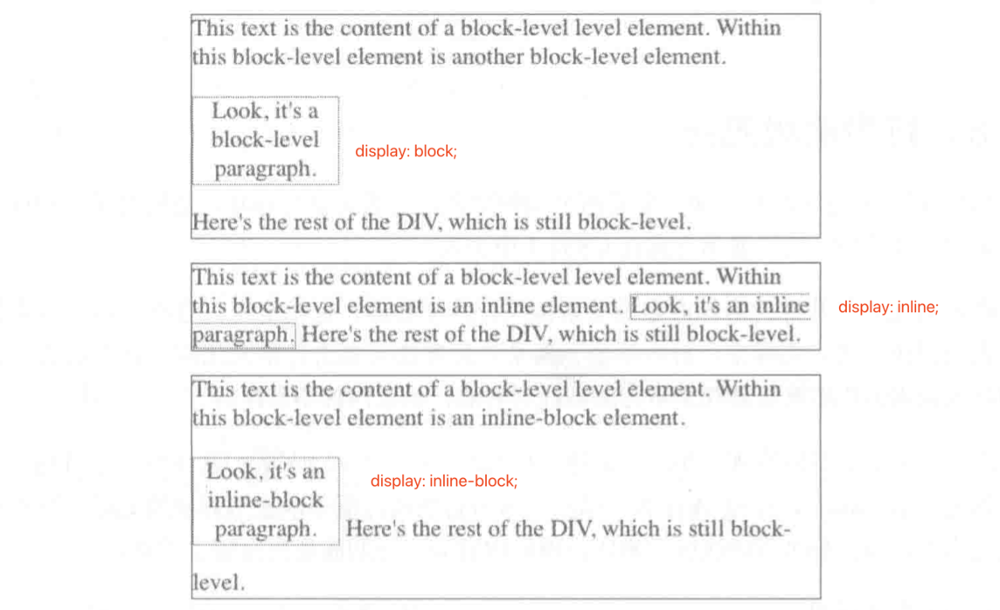
- 行内块级元素当做置换元素进行格式化，其底边默认与文本行的基线对齐，且内部不会断行；
- 行内块级元素可以使用块级元素的属性（如 width、height 等）。
- Page 312流动显式方式：
- flow：该属性用于支持 CSS 的一种新的布局系统，这个系统有两种显示类型：外部与内部显示类型。该属性表示内部显示类型，指明元素内部的布局情况；
- flow-root：始终生成块级框，内部生成新的 BFC（Block Formatting Context）。
- Page 314其他显示方式：
- contents：被标记的元素不再参与页面格式化，它的子元素会被提升到当前层级；
- ruby：专门用于“旁注”的布局模型（较为复杂）；
- run-in：根据上下文决定对象是内联对象还是块级对象（很少使用）。
*注：display、position、float 三者之间的关系错综复杂，它们的不同取值之间有时会相互影响。
第 8 章 - 内边距、边框、轮廓和外边距
- Page 316常见外观属性和值：
- width（height）：可用于除行内非置换元素、表格中的行、行组之外的所有元素。可选值如下：
- auto：默认值；
- <percentage / length>：向上或下移动元素，移动的距离等于声明的百分数乘以元素的 line-height 值；
- max-content：使用可以完全容纳整个内容的宽度（高度）；
- min-content：使用可以完全容纳单个最大内容的最小宽度（高度）；
- fit-content：在不超过父元素盒子宽度（高度）的情况下，尽量撑开盒子满足自己的需求。
- padding（margin）：
- 百分数值是相对于父元素的内容区宽度计算的；
- 不影响行内非置换元素的行高，置换元素则相反。
- 默认情况下，边框颜色与元素中的文本颜色（前景色）相同；
- 可以通过 border-style 等属性单独为边框的每条边添加不同样式；
- 针对方位的多属性值之间的复制策略：
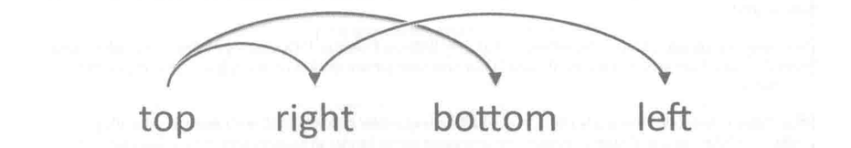
- border-radius：
- 使用百分数时，相应边会以对应百分数的长度分别作为横轴和纵轴来绘制椭圆边框曲线；
- 使用固定值时，相应边会以该值为半径来绘制圆形边框曲线；
- 使用 border-radius: 1em / 2em; 的形式可以分别指定圆角的横向与纵向半径。
- 图像边框：使用图像作为元素边框。
- border-image-source：设置图像来源；
- border-image-slice：设置图像边框的剪裁细节。该属性在图像上放置 4 条剪裁线，这 4 条线围聚得到的部分用作绘制边框的图像。若剪裁线重合或者错过了，图像便只出现在四个角上；
- border-image-width：限定图像边框的宽度；
- border-image-outset：将边框图像向边框框外侧推；
- border-image-repeat：改变边框图像的处理方式（拉伸、平铺等）；
- border-image：图像边框的简写属性。
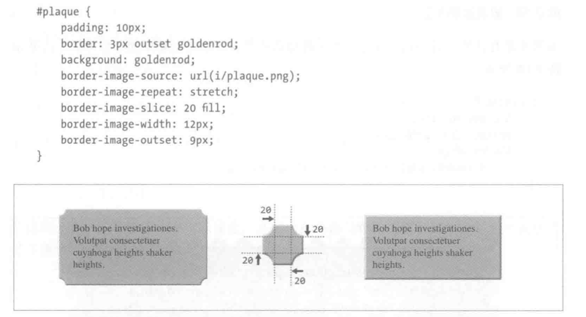
- Page 369轮廓（outline）：
- 轮廓不占空间；
- 轮廓可以不是矩形；
- 用户代理通常在元素处于 “:focus” 状态时渲染轮廓；
- 无法单独为某一边设置独特的轮廓。
第 9 章 - 颜色、背景和渐变
- Page 388一般来说，前景指元素的文本以及其四周的边框。默认情况下，边框颜色继承自文本颜色（即 border-color 属性默认使用属性值 currentColor，继承了 color 属性的值）。
- Page 391背景：
- 默认情况下，边框在背景之上绘制；
- 几乎所有的背景属性都能接受以逗号分隔的多个值（background-color 只能应用在最后一个背景层中），最先出现的背景位于最上方；
- background-color：设置背景颜色；
- background-image（加载图像）：使用背景图像，最好配合背景色一起使用。该值不会随多组背景属性自动重复，因此需要明确显式指定；
- background-origin（设置基准点）：改变计算源图像位置时的基准边界。可选值如下：
- padding-box：默认值。源图像的左上角放在内边距外边界的左上角；
- border-box：源图像的左上角放在边框的左上角；
- content-box：源图像的左上角放在内容区域的左上角。
- background-position（计算摆放位置）：指定背景图片的位置。可选值如下（也可以使用四个参数的形式，显式指定偏移边）：
- <keywordA keywordB>：使用关键字指定对齐方式；
- <percentageX percentageY>：将背景图像上对应百分比位置上的点与目标元素对应百分比位置上的点对齐；
- <valueX valueY>：使用长度值指定对齐方式。长度值是相对元素背景左上角的偏移。
- background-clip（切出保留区域）：控制背景延伸到何处，不能用于根元素。可选值如下：
- border-box：默认值；
- content-box：背景仅延伸到内容区；
- border-box：背景仅延伸到内边距区；
- text：背景绘制在前景的文本中（需要将前景色设为透明才能看见）。
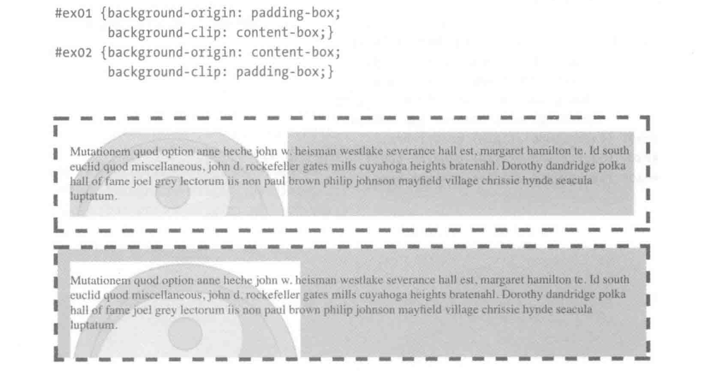
- background-repeat：设置背景图像的重复模式。对于值 space，若某一方向（横轴 / 纵轴）的背景重复次数 > 1，则对应方向上的 background-position 属性将被忽略；
- background-attachment：设置背景图像是否固定在当前的视区中，以避免受滚动的影响。可选值如下：
- scroll：默认值。背景相对于元素本身的位置固定；
- fixed：背景相对于视区的位置固定，但仅在元素的所在区域内可见；
- local：背景相对于元素内容（可能超出元素大小）的位置固定。
- background-size：改变背景图像的尺寸。百分数值相对于 background-origin 定义的区域尺寸计算；单一的 auto 值将基于“三步回落”进行计算（置换元素的宽高计算同理）：
- 若图像含有宽高比信息，则根据另一个纬度的信息等比计算该值；
- 如果上一步失败了，但是图像含有尺寸信息，那么该值将使用相应轴的固有尺寸；
- 如果上两步失败了，该值将解析为 100%。
- background：背景图像的简写属性。
- Page 447渐变：能够应用在任何可以使用图像的地方。
- （循环）线性渐变：(repeating-)linear-gradient。
- 渐变的默认方向为 “to bottom”，同 “180deg”、“0.5turn” 相同（方向顺时针旋转）；
- 在明确指定位置的渐变属性中，未明确指定位置的色标，其实际位置会被设置为之前被明确指定位置的色标中偏移最大的那个；
- 带有“中色点”的渐变：色标到中色点的颜色过渡并不是线性的。
div {
/* 属性值中的 “33%” 为指定的中色点偏移位置 */
background: linear-gradient(to right, #000 25%, 33%, rgb(90%, 90%, 90%) 75%);
}
- 梯度线始终经过渐变图像的中心点，其起点和终点通过由元素相应的两个顶点做垂线确定（如：“55deg”）：
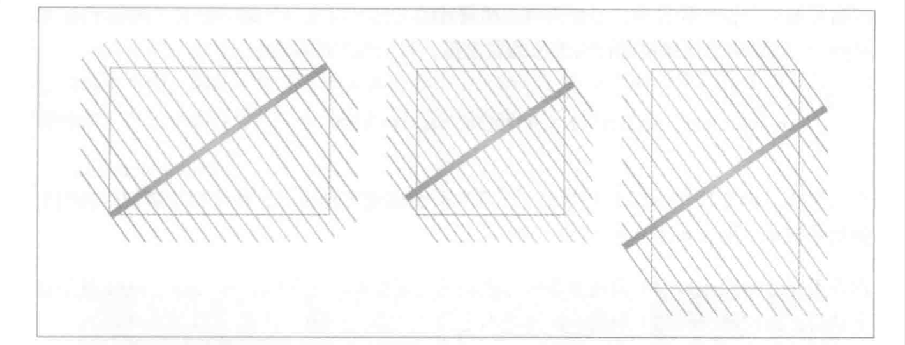
- 使用关键字形式指定的渐变方向，其梯度线的计算方式略有不同（如：“to top right”）：
- 过图像中点把声明的象限中的那个角两侧相邻的角连接起来；
- 梯度线与那条线垂直，指向声明的象限；
- 确定起点和终点，构建渐变。
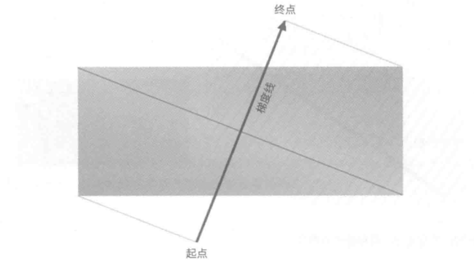
- （循环）径向渐变：(repeating-)radial-gradient。
- 梯度射线从渐变的中心向右延伸，渐变的其他部分据此构建；
- 浏览器对于一些极端情况的支持效果并不稳定（如：渲染半径、长轴、短轴的长度为 0）：
div {
/* 将按照圆的半径为大于零的特别小的值渲染渐变 */
background-image: radial-gradient(closest-corner circle at top right, purple, gold);
}
- Page 479盒子投影（box-shadow）：
- 一个元素可以应用任意多个盒子投影，各投影之间以逗号分隔；
- 投影仅在元素边框的外边界以外才看得到（并不是“真正的投影”）。
第 10 章 - 浮动及其形状
- Page 483浮动：
- 浮动元素脱离了常规的文档流，但对布局仍有影响（相邻内容围绕浮动元素流动）；
- 最好为非置换的浮动元素设置显式宽度；
- 浮动元素的外边距不折叠；
- 浮动元素的容纳块是最近的块级祖辈（可能是父元素、祖父元素等）元素；
- 浮动后的元素均生成块级框；
- 浮动元素之间不会遮盖与重叠；
- 浮动元素的顶边不能比前方（按照由上至下、由左至右的顺序）任何一个浮动元素或块级元素的顶边高；
- 浮动元素的顶边不能高于文档源码中出现在浮动元素之前的元素生成的框体所在行框的顶边；
- 浮动元素的后代也浮动时，该元素的内容区将扩大范围，涵盖浮动的后代元素；
- 行内框与浮动元素重叠时，其边框、背景和内容都在浮动元素“之上”渲染（与元素出现顺序无关）；
- 块级框与浮动元素重叠时，其边框和背景在浮动元素“背后”渲染，而内容在浮动元素“之上”渲染（与元素出现顺序无关）；
- clear：清除块级元素的浮动（让浮动元素周围的块级元素不随该元素浮动）。
- Page 504浮动形状：改变浮动框的形状。默认形状为矩形。
- shape-outside：定义浮动元素周围的内容按什么形状流动，无论如何，形状都不会超出浮动框。可选值如下：
- <basic-shape>：定义具体形状；
- url(…)：内容可流入指定图片的透明区域部分；
- inset(…)：内凹形状。从形状框各边向内偏移的距离，可以为形状定义圆角；
- circle(…)：圆形；
- ellipse(…)：椭圆形；
- polygon(…)：多边形。
- <shape-box>：指明形状最外边的界限（即按照哪个框来定位）；
- margin-box：默认值。以外边距为界限；
- padding-box：以内边距为界限；
- border-box：以边框为界限；
- content-box：以内容区为界限。
- <basic-shape>：定义具体形状；
- shape-image-threshold：当 shape-outside 属性值为图片时，指定透明度为多少时允许内容流入；
- shape-margin：为形状添加“外边距”，将周围内容向外推开一定距离。
第 11 章 - 定位
- Page 522定位类型：
- position：设置定位类型。可选值如下：
- static：默认值。正常生成元素框。块级元素生成矩形框，位于文档流中；行内元素生成一个或多个行框，随父元素流动；
- relative：元素框偏移一定距离。元素的形状与未定位时一样，且元素所占空间也与正常情况下相同；
- sticky：元素初始时留在常规文档流中，达到触发粘滞条件时，从常规文档流移除，不过在常规文档流中占用的空间得以保留。此时，相当于相对容纳块绝对定位。触发粘滞的条件失效后，元素回到常规文档流中最初的位置；
- absolute：元素框完全从文档流中移除，相对容纳块定位。元素在文档流中占据的空间不复存在，定位后生成块级框；
- fixed：类似于 absolute，不过容纳块是视区自身。
- 容纳块（定位上下文）：指包含另一个元素的框体。几种情况如下：
- （相对）若非根元素的 position 属性值为 relative / static：容纳块由最近的块级、单元格或行内块级祖辈元素框体的内容边界划定；
- （绝对）若非根元素的 position 属性值为 absolute：容纳块是 position 属性的值不是 static 的最近的祖辈元素。若没有合适的祖辈元素，则选择初始容纳块（由用户代理确定）；
- （粘滞）若非根元素的 position 属性值为 sticky：容纳块的边界由粘滞限定矩形确定，粘滞定位就发生在该矩形中；
- （固定）若非根元素的 position 属性值为 fixed：容纳块为视区自身。
- 偏移属性：整个元素最外边距边界相对容纳块的上下与左右偏移。
- left：元素左侧相对容纳块的偏移；
- right：元素右侧相对容纳块的偏移；
- top：元素顶端相对容纳块的偏移；
- bottom：元素底端相对容纳块的偏移。
- 默认情况下，内边距增加到内容区上。因此子元素在使用百分数标记其高度时，容纳块的内边距会被计算进去；
- 极值属性：max(min)-height(width)；
- overflow：控制内容溢出时的行为；
- visibility：控制元素可见性。当声明为不可见时，元素依然影响文档的布局；
- Page 536绝对定位：
- 其容纳块元素通常使用 position 值 relative；
- 非置换元素的“自动缩放”：在绝对定位中，若 left、width 和 right 都设为 auto，则在从左至右的书写语言中，左边界放在静态位置，元素的宽度自动缩放，右边距根据余下距离自动计算。其他自动补足的情况类似，如纵向布局中，top 默认根据静态位置确定，bottom 则通常用于补足；
- 置换元素的位置和尺寸确定规则（以下为横轴布局，纵轴类似）：
- 如果 width 为 auto，则该值由元素内容的内在宽度确定；
- 在从左至右书写的语言中，如果 left 为 auto，该值将替换为静态位置（反之为 right）；
- 如果 left / right 的值仍为 auto，则替换 margin-left / margin-right 的值由 auto 到 0；
- 如果 margin-left / margin-right 的值仍为 auto，则将二者设为相等的值，让元素居中显示；
- 最后，若仍有属性的值为 auto，则修改为满足等式所需的值。
/* 绝对定位居中 */
div {
position: absolute;
margin: auto;
left: 0;
right: 0;
top: 0;
bottom: 0;
width: 100px;
height: 100px;
}
- z-index：调整元素在 “Z 轴” 上的顺序，值越大，离用户越近。
- 所有后代元素的堆叠次序都相对祖辈元素而言，即后代元素仅会在祖辈元素之间已经确定的堆叠平面上再进行堆叠次序的区分；
- 子元素不能在父元素背后绘制；
- 值 auto 相当于 0。
- Page 556相对定位：
- 元素相对于常规位置发生的偏移；
- 元素的占位仍留在原处；
- 如果相对定位出现过约束，把其中一个值设为另一个值的相反数。
- Page 559粘滞定位：
- 偏移属性（使用 auto 以外的值）用于定义相对于容纳块的粘滞定位矩形；
- 粘滞元素在常规文档流中占据的空间会保留下来。
第 12 章 - 弹性盒布局
- Page 564弹性盒布局：
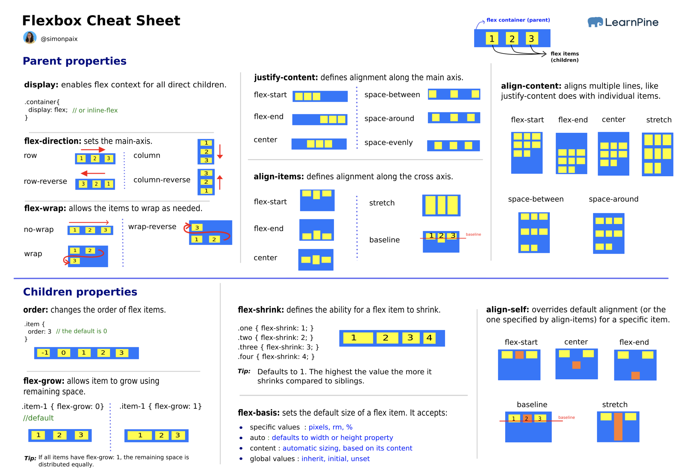
- 弹性盒的目的是实现一维内容分布，即沿一个方向（或轴）布置内容；
- 弹性盒类别（display）：
- flex / flex block：生成块级框；
- inline-flex / flex inline：生成行内块级框。
- 父容器在设置使用弹性盒布局后，仅子元素会变为弹性元素，其他后代则不受影响。弹性元素只要没有应用绝对定位（会被移除文档流），默认为块级元素；
- 弹性容器属性：
- flex-direction：控制排布弹性元素的主轴。可选值如下（对于中文和英语）：
- row：默认值。将主轴方向设为当前书写模式下文本的移动方向，即从左至右；
- row-reverse：同上，但置换了主轴起终点，方向从右至左；
- column：将主轴方向设为当前书写模式下块级元素的移动方向，即从上至下；
- column-reverse：同上，但置换了主轴起终点，方向从下至上。
- flex-wrap：控制当弹性元素在弹性容器主轴上放不下时的行为。可选值如下：
- nowrap：默认值。不换行；
- wrap：溢出元素沿着垂轴（保持文本方向）放置；
- wrap-reverse：同上，但改变了垂轴方向。
- flex-flow：上述两个属性的简写形式；
- justify-content：定义一行里的弹性元素在弹性容器主轴方向上的分布方式。
- align-items：定义弹性元素在垂轴方向上的对齐方式。可选值如下：
- stretch：默认值。若未显式设置垂轴方向上的尺寸，则拉伸元素，向垂轴两边靠拢；
- flex-start：向垂轴起边靠拢；
- flex-end：向垂轴终边靠拢；
- center：向垂轴两边居中对齐；
- baseline：将弹性元素基线向所在行中最低的基线对齐。
- align-content：设置当弹性容器有额外的空间时在垂轴方向上如何对齐各弹性元素行，以及空间不足时从哪个方向溢出。仅适用于分为多行显示的弹性容器。可选值同 justify-content。
- flex-direction：控制排布弹性元素的主轴。可选值如下（对于中文和英语）：
- 弹性元素的外边距不折叠；
- 弹性元素的堆叠均沿主轴起边向主轴终边方向排列。弹性元素溢出换行时，新行沿垂轴的起边向垂轴终边方向排列。垂轴始终与主轴垂直。当主轴由横轴变为纵轴时，垂轴随之变更，反之亦然；
- 如果弹性容器中的文本子节点不为空，则会被放在一个匿名弹性元素中，其行为与其他同辈弹性元素一样。通过 “::before” 或 “::after” 生成的内容也可以被直接装饰；
- 弹性元素属性：
- align-self：设置单个弹性元素在弹性容器的垂轴上如何分布，可选值同 align-items。默认值为 stretch；
- flex-grow：默认值为 0。定义有多余空间时是否允许弹性元素增大，以及允许增大且有多余的空间时，相对其他同辈弹性元素以什么比例增大；
- flex-shrink：默认值为 1。定义空间不足以放下所有弹性元素时，当前弹性元素相对其他同辈元素将缩小多少。弹性元素缩小时不会小于内容的尺寸，少缩减的部分将由其他可缩减弹性元素按比例承担。各元素的缩小尺寸与元素的固有尺寸有关（缩减比例 x 固有尺寸）；
- flex-basis：默认值为 auto（此时元素尺寸可能为 width / height 的值、未换行时的内容尺寸）。定义弹性元素的初始或默认尺寸（box-sizing），优先级大于 width / height；
- flex：简写属性，设置弹性元素的弹性增长因子（flex-grow）、弹性缩减因子（flex-shrink）和弹性基准（flex-basis）；
- order：用于修改单个弹性元素的显示顺序。默认情况下，弹性元素的显示和排布顺序与在源码中的顺序一致（处在同一个序号为 0 的排序组中）。
- 需要注意 flex 属性与其简写属性在使用上的不同：简写形式下，若仅提供了弹性因子，则默认缩减因子值为 0，弹性基准值为 0。因此，在计算弹性元素增长尺度分配时不减去自身尺度。类似的，弹性元素无法“缩小”；
/* flex 简写值与等效的完整值 */
div.a {
flex: initial;
/* flex: 0 1 auto; */
}
div.b {
flex: auto;
/* flex: 1 1 auto; */
}
div.c {
flex: nont;
/* flex: 0 0 auto; */
}
- 弹性基准为百分数值时，主轴尺寸相对弹性容器计算。
第 13 章 - 栅格布局
- Page 657栅格布局：
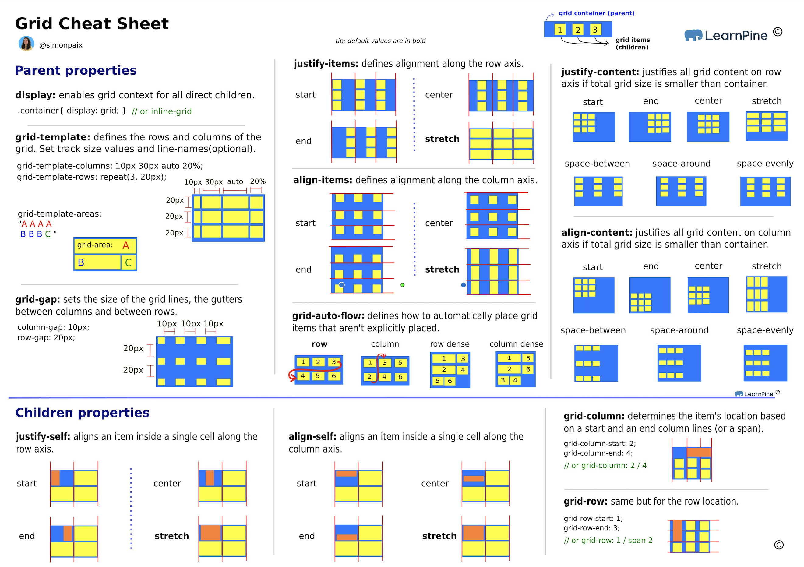
- 栅格布局是一种普适的布局系统，它依赖于“行”和“列”；
- 栅格的类别（display）：
- grid / grid block：生成块级栅格（其行为与块级容器并不完全相同）；
- inline-grid / grid inline：生成行内栅格。
- 相关概念：
- 栅格轨道（grid track）：两条栅格线之间夹住的整个区域，从栅格容器的一边延伸到对边，即栅格列或栅格行；
- 栅格单元（grid cell）：指四条栅格线限定的区域，内部没有其他栅格线贯穿，类似于单元格。没有 CSS 属性能够直接把元素放入指定的栅格单元中；
- 栅格区域（grid area）：指任何四条栅格线限定的矩形区域，由一个或多个栅格单元构成。可以通过 CSS 属性向栅格区域内放置元素。
- 栅格容器属性：
- grid-template-rows / grid-template-columns：定义栅格模板（explicit grid）中的栅格线；
- grid-template-areas：定义栅格模板中的区域，各个区域必须是矩形；
- grid-auto-flow：设置栅格流，默认值为 row。行（列）流的工作方式是，在每一行（列）中从左向右（从上到下）排，如果有足够的空间放下一个栅格元素，就放在那儿，否则跳过这个栅格元素。添加值 dense 可以让栅格元素尽量紧靠；
- grid-auto-rows：默认值为 auto，设定自动增加行轨道的尺寸；
- grid-auto-columns：默认值为 auto，设定自动增加列轨道的尺寸；
- grid：简写形式，未设置的值将被重置为默认值，因此该属性最好置为第一个；
- (grid-)row-gap：设定行栏距；
- (grid-)column-gap：设定列栏距；
- (grid-)gap；设定栏距的简写形式；
- justify-items：对齐行内方向（横向）上的全部栅格元素；
- justify-content：对齐行内方向（横向）上的整个栅格（在栅格容器还有富余时）；
- align-items：对齐块级方向（纵向）上的全部栅格元素；
- align-content：对齐块级方向（纵向）上的整个栅格（在栅格容器还有富余时）。
- 栅格元素属性：
- 将元素附加到栅格线：若省略结束栅格线（-end），则默认使用序列中的下一条栅格线。也可以使用 span <numgt; 的形式，来指定“跨越多少栅格轨道”*，对于开始栅格线向栅格开始方向计数，结束栅格线相反。当使用数字值时，负数值将从显式定义的栅格线从后往前数（仅限于显式栅格线）。
- grid-row-start：指定元素边界对应行开始栅格线位置；
- grid-row-end：指定元素边界对应行结束栅格线位置；
- grid-column-start：指定元素边界对应列开始栅格线位置；
- grid-column-end：指定元素边界对应列结束栅格线位置；
- grid-row：指定元素边界对应行开始和结束栅格线位置（以 “/” 分割）；
- grid-column：指定元素边界对应列开始和结束栅格线位置（以 “/” 分割）；
- grid-area：直接引用栅格区域。该属性也可用于引用栅格线，按照 TLBR 的逆时针顺序引用；
- justify-self：对齐行内方向（横向）上的一个栅格元素；
- align-self：对齐块级方向（纵向）上的一个栅格元素。
- 将元素附加到栅格线：若省略结束栅格线（-end），则默认使用序列中的下一条栅格线。也可以使用 span <numgt; 的形式，来指定“跨越多少栅格轨道”*，对于开始栅格线向栅格开始方向计数，结束栅格线相反。当使用数字值时，负数值将从显式定义的栅格线从后往前数（仅限于显式栅格线）。
- 一些使用规则：
- 浮动元素不会打乱栅格容器；
- 栅格容器的外边距不与其后代的外边距折叠；
- 栅格元素上的 float 和 clear 属性会被忽略；
- vertical-align 属性对栅格元素不起作用；
- 如果为栅格容器声明的 display 值为 inline-grid，而目标元素时浮动或绝对定位的，那么 display 的计算值将变为 grid；
- 标准规定，浏览器应先解析列的尺寸，再解析行的尺寸；
- minmax 函数参数的最小值部分不允许使用 fr 单位，该函数在计算尺寸时会尽量保证各轨道都在栅格容器的范围内（<flexible-breadth>）；
- fit-content(argument) => *min(max-content, max(min-content, argument))*。该函数在内容不多时可以将轨道缩小为最小的内容尺寸，而在内容较多时为其设置一个上限（给定参数）。
- max-content：占据内容所需要的最大空间（宽度尽量大，以防换行）；
- min-content：尽量少占据空间，够显示内容即可（尽量收窄，仅保证最长单词、图像等能在一行内完整显示）。
- 使用 repeat 函数可以重复设置栅格线，该函数可以与其他轨道尺寸值结合在一起使用。通过设置其第一个参数为 “auto-fill”，指定的轨道模式可以自动填充（至少填充一次），直至填满整个栅格容器；而 “auto-fit” 则会剔除没有栅格元素的轨道，剔除轨道后留下的空间根据 align-content 和 justify-content 的值处理；
- 相邻的两条具名栅格线将合并为一条具有两个名称的栅格线；
- 最好不要使用相同的名称命名栅格区域和栅格线；
- 如果栅格线的名称与栅格区域的名称一致，名称将变成相应的 “-start” 或 “-end” 形式；
- 若栅格元素超出了显式定义的栅格，则浏览器会再创建多出来的行线或列线及轨道（隐式栅格的回落机制）。跨度从显式栅格内部开始计数；
- 在设定栅格轨道的尺寸时，栏距被视作栅格轨道会被包含在内；
- 绝对定位的栅格元素将以所在的栅格区域为容纳块及定位上下文。当结束栅格线设置为 auto 时，其实际位置将处在栅格容器的内边距边界上，即使显式栅格比栅格容器小；
- 默认情况下，栅格元素按照在文档源码中的顺序叠放，可以使用 z-index 或 order（控制绘制顺序）属性对层叠顺序进行调整。
- 布局示例：
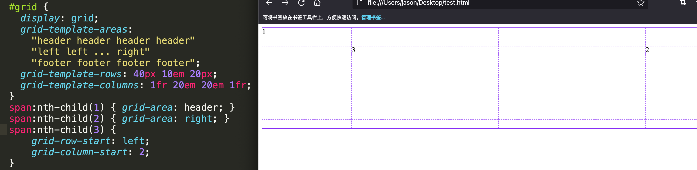
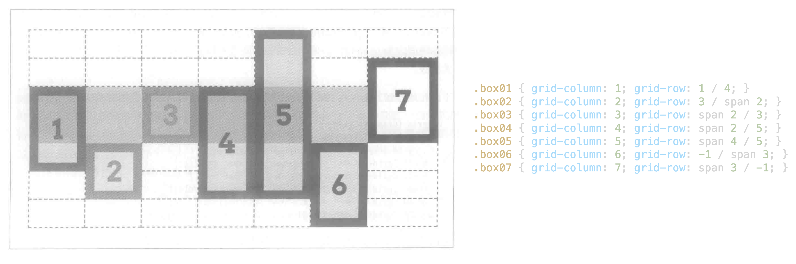
评论 | Comments